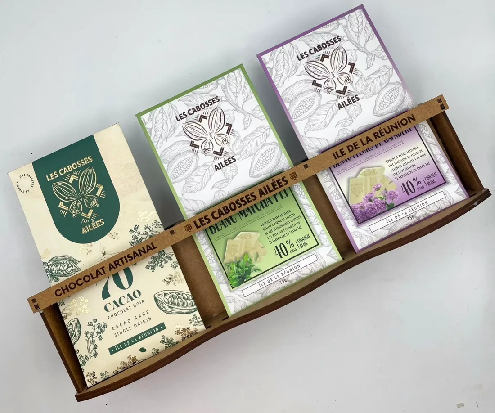
Les Cabosses Ailées
« Sexy raffinée cette tablette de chocolat ! » De retour en boutique après avoir été victime de son succès.
Chocolat artisanal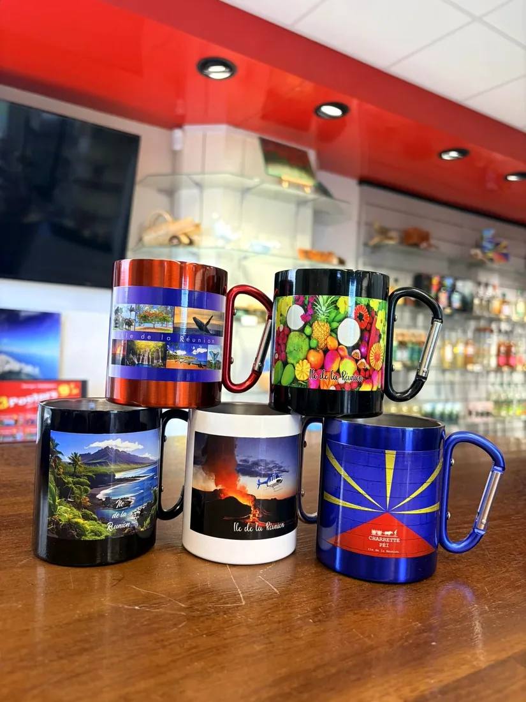
Piton Sainte-Rose · face à l'église Notre-Dame des Laves
Boutique d'artisanat local : les créateurs péi, leurs bijoux, leurs douceurs et mille trouvailles 100 % Réunion, au pied du volcan.
386 Route Nationale 2, 97439 Sainte-Rose · du mercredi au lundi
La boutique
Place des fêtes, au Piton Sainte-Rose, juste en face de l'église Notre-Dame des Laves : la devanture se repère de loin, habillée de grandes photos de l'île.
« Une boutique artisanale 100 % locale ! »
À l'intérieur, un large éventail de créateurs péi et de produits artisanaux originaux : de quoi repartir avec un vrai morceau de l'île.
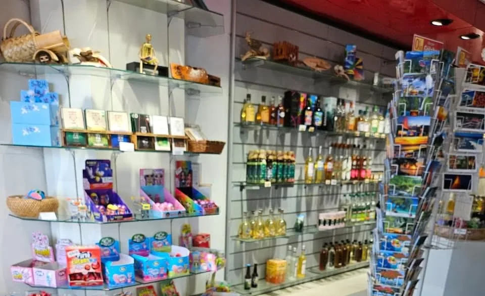
La vitrine à bijoux
Hibiscus dorés, tortues, dodo, margouillats sur nacre, ti tang… « Des créations originales à retrouver dans notre vitrine à bijoux ».
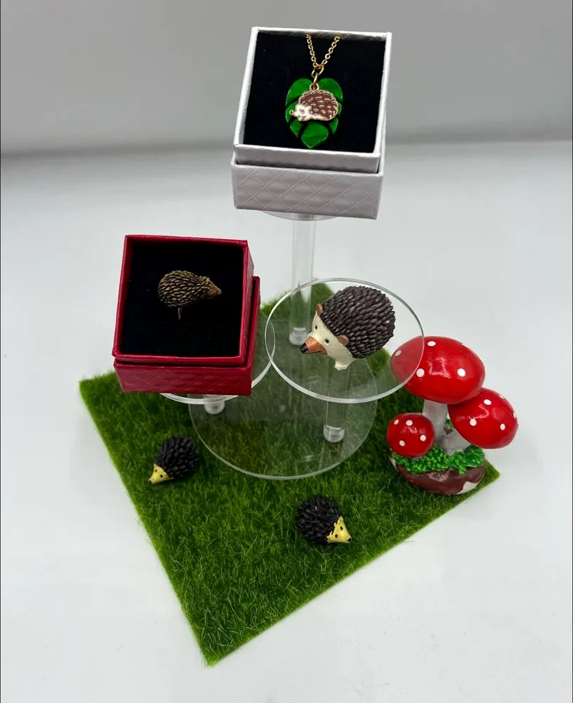
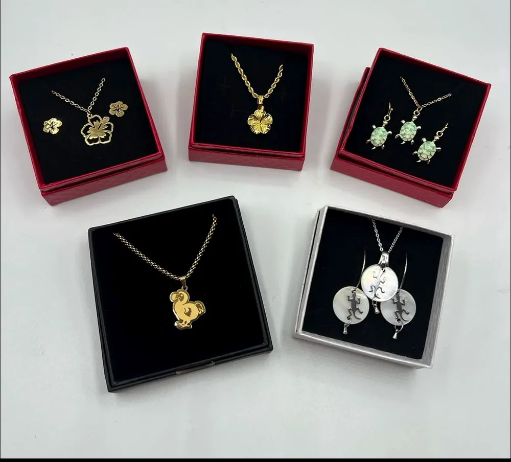
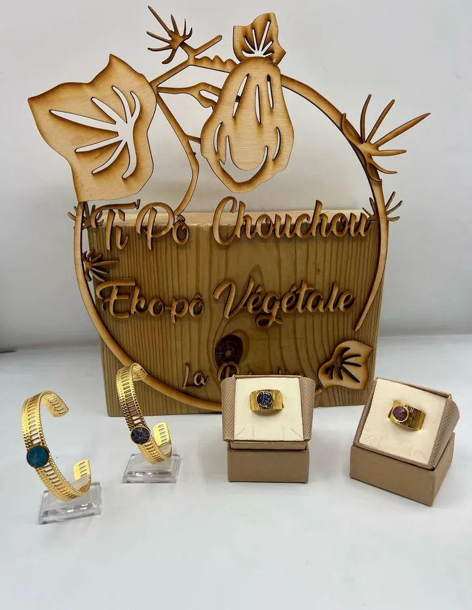
Les trouvailles péi
Faites glisser

« Sexy raffinée cette tablette de chocolat ! » De retour en boutique après avoir été victime de son succès.
Chocolat artisanal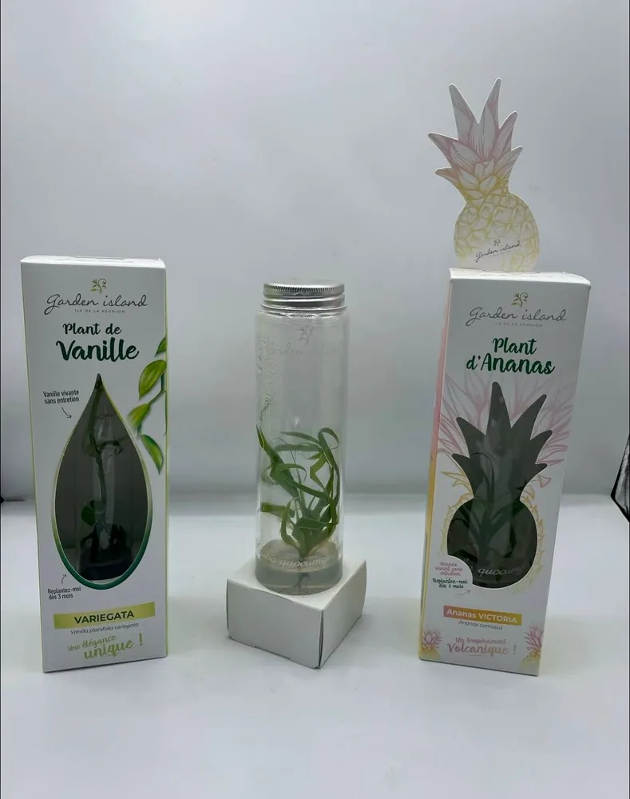
« Des plants de vanille ou d'ananas prêts à être ramenés dans votre valise ! Avez-vous la main verte ? »
Garden Island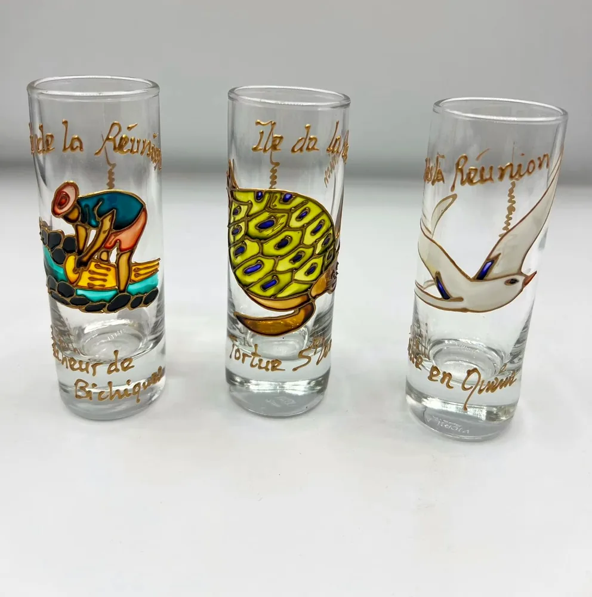
« Boire dans un verre peint aux couleurs de la Réunion, c'est savourer sa boisson autrement. »
Aux couleurs de La Réunion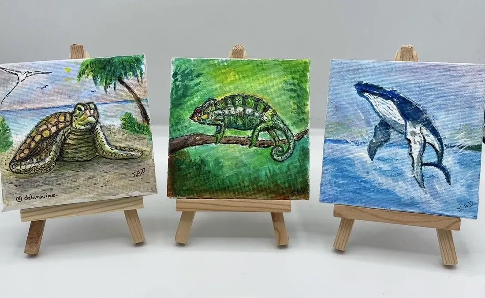
Pour la console d'entrée ou la table de chevet : « 1 dessin, 1 tableau ! Ils sont uniques ! »
Touche chic 974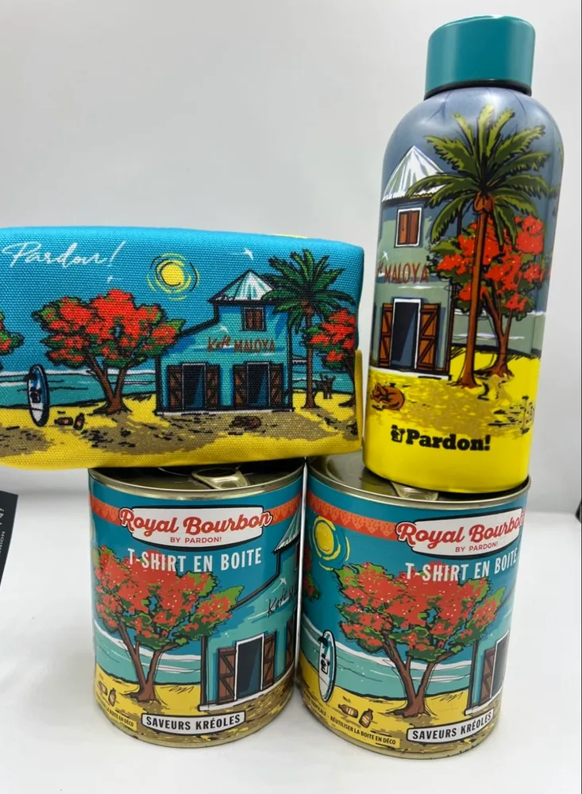
Gourde, trousse et T-shirts en boîte : les dernières pièces d'une collection victime de son succès.
@pardon.re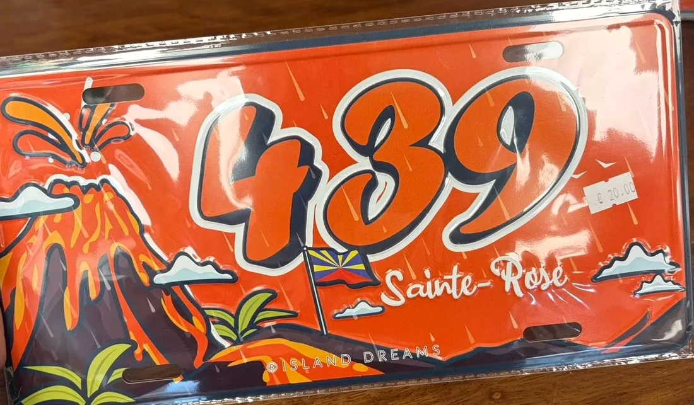
La plaque aux couleurs du volcan et du drapeau réunionnais, pour emporter un bout de Sainte-Rose chez soi.
Island DreamsEn inox, avec anse mousqueton : volcan, fruits péi, drapeau, paysages de l'île.
En boutiqueOffrir pour Noël
« Des colis cadeaux pour toutes les occasions particulières et pour toutes les fêtes ! »
Ti tang, hibiscus, tortue ou dodo : un cadeau prêt à offrir.
Chocolat Les Cabosses Ailées, confitures, soda péi citron gingembre.
Un mini tableau, un verre peint, un plant de vanille à faire grandir.
Venir nous voir
Une halte idéale sur la route du volcan, juste en face de Notre-Dame des Laves.
386 Route Nationale 2
Piton Sainte-Rose, 97439 Sainte-Rose
Face à l'église Notre-Dame des Laves
Du mercredi au lundi
Cartes bancaires, chèques et espèces · accueil des personnes à mobilité réduite · parking.